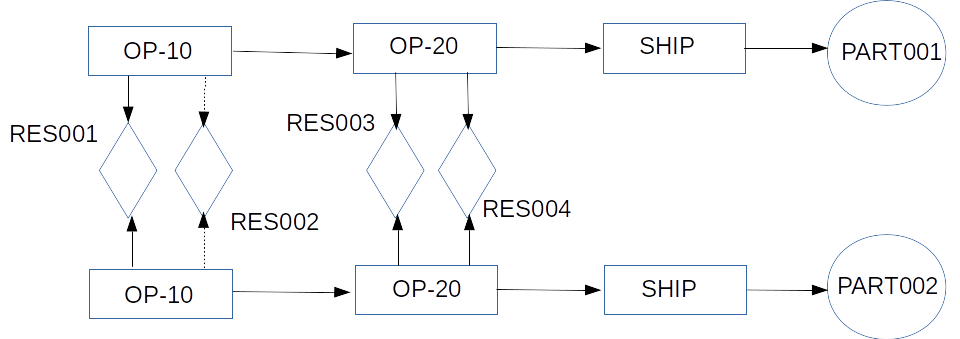

Since we plan a large number of test plans for regression testing,
this page will describe multiple "Base Models" that define a
JobShop and then modify the "Base Model" with minor
changes and detail how the output plan will also change based on
these changes to the "Base Model".
Base Model 001 Schematic Diagram:

- We have two SKU's, PART001 and PART002 which are made through a three
step routing.
- The three steps (Tasks) are OP-10 and OP-20 and SHIP.
- The OP-10 step for both parts load Workcenter RES001 as the primary
Workcenter; but they can also use RES002 if the primary workcenter
is not available.
- The OP-20 step for both parts load Workcenter RES003. There are no
alternate Workcenters available for this step.
- The SHIP step for both parts does not load any workceter and
typically has a fixed setup_time alone (no per unit time).
Base Scenario 001 Data:
- The planning horizon stretches from 2018-01-01 to 2018-02-01
- All the Workcenters share the same efficiency calendar; which
has 3 shifts a day and all shifts are working/available with
efficiency set to 100%.
- The setup time for OP-10 and OP-20 for both parts are 90 minutes
each; and the per unit cycle time for OP-10 and OP-20 for both
parts are 5 minutes each. The final shipment/delivery tasks are
7 days long for both parts.
- Demand is set to 270 units for both parts. This is for ease of
calculation and debugging the planning results. For 270 units,
we have both OP-10 and OP-20 take a standard time of
90 + 270*5 = 1440 minutes = 1 day for both parts.
- As a result, barring holidays and efficiency related delays,
it will take us a total lead time of 9 days
(7 days shipping + 1 day OP-20 + 1 day OP-10)
to manufacture and satisfy either demand.
Now, we are ready to look at specific test cases that make incremental
modifications to the Base Model to understand how the application
creates suitable plans.
You are strongly advised to go through these tests in order since
they are usually structured to build upon one another in increasing
order of complexity. We can see how the solver behavior might (or
might not) change as we make changes to the input data.
Base Model 002 Schematic Diagram:

- We have two SKU's, PART001 and PART002 which are made through a three
step routing.
- The three steps (Tasks) are OP-10 and OP-20 and SHIP.
- The OP-10 step for both parts load Workcenter RES001 as the primary
Workcenter; but they can also use RES002 if the primary workcenter
is not available.
- The OP-20 step for both parts load Workcenter RES003; but they can
also use RES004 if hte primary workcenter is not available.
- The SHIP step for both parts does not load any workceter and
typically has a fixed setup_time alone (no per unit time).
Base Scenario 002 Data:
- The planning horizon stretches from 2018-01-01 to 2018-02-01
- All the Workcenters share the same efficiency calendar; which
has 3 shifts a day and all shifts are working/available with
efficiency set to 100%.
- The setup time for OP-10 and OP-20 for both parts are 90 minutes
each; and the per unit cycle time for OP-10 and OP-20 for both
parts are 5 minutes each. The final shipment/delivery tasks are
7 days long for both parts.
- Demand is set to 270 units for both parts. This is for ease of
calculation and debugging the planning results. For 270 units,
we have both OP-10 and OP-20 take a standard time of
90 + 270*5 = 1440 minutes = 1 day for both parts.
- As a result, barring holidays and efficiency related delays,
it will take us a total lead time of 9 days
(7 days shipping + 1 day OP-20 + 1 day OP-10)
to manufacture and satisfy either demand.
Now, we are ready to look at specific test cases that make incremental
modifications to the Base Model to understand how the application
creates suitable plans.
You are strongly advised to go through these tests in order since
they are usually structured to build upon one another in increasing
order of complexity. We can see how the solver behavior might (or
might not) change as we make changes to the input data.